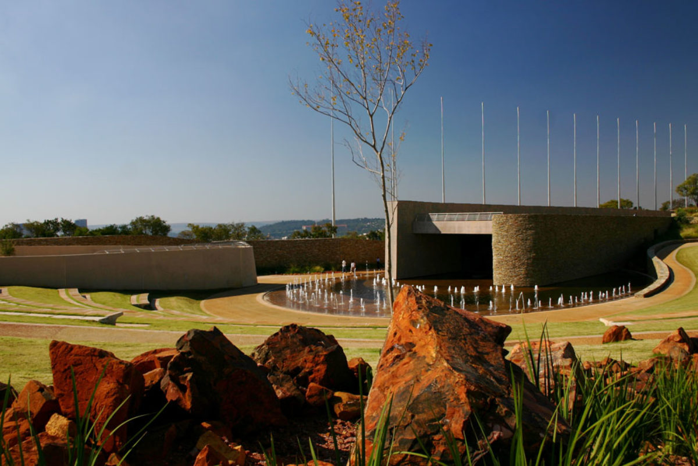
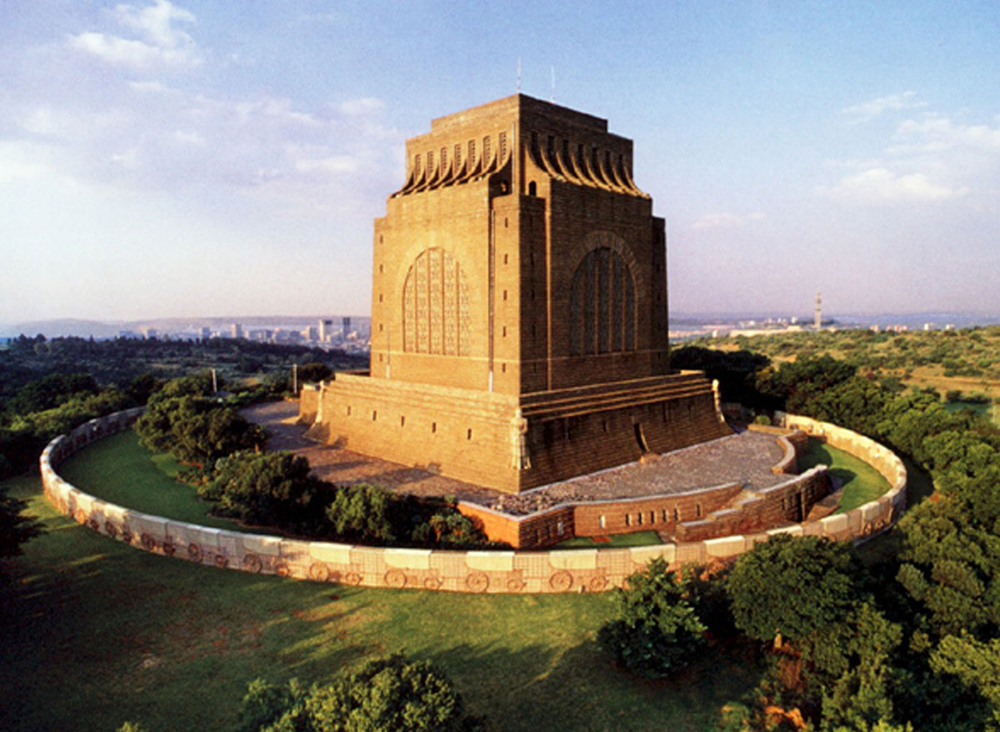

Historical Places in capital city Pretoria
Freedom park Pretoria

Freedom Park is situated on Salvokop in Pretoria. It includes a memorial with a list of the names of
those killed in the South African Wars, World War I, World War II as well as during the apartheid era.
Construction of the park occurred in various phases and was dealt with by Stefanutti Stocks, WBHO,
Trencon, Concor and others.
The Project was overseen in totality by Mongane Wally Serote
Vooortrekker Monument

The Voortrekker Monument is located just south of Pretoria in South Africa. This massive granite
structure is prominently located on a hilltop, and was raised to commemorate the Voortrekkers who left
the Cape Colony between 1835 and 1854.
On 8 July 2011 the Voortrekker Monument, designed by the architect Gerard Moerdijk, was declared a
National Heritage Site by the South African Heritage Resource Agency.
Union building

The Union Buildings form the official seat of the South African Government and also house the offices of
the President
of South Africa. The imposing buildings are located in Pretoria, atop Meintjieskop at the northern end
of Arcadia, close
to historic Church Square and the Voortrekker Monument.